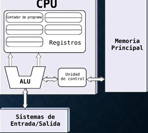
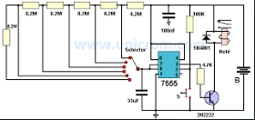
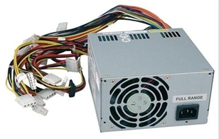
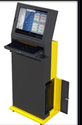

UNIDAD CENTRAL DE PROCESAMIENTO (CPU)

La Unidad Central de Procesamiento, comúnmente conocida como CPU, es el componente principal de una computadora encargado de interpretar y ejecutar las instrucciones de los programas. Actúa como el "cerebro" del sistema, procesando datos y realizando cálculos necesarios para el funcionamiento de las aplicaciones y del propio sistema operativo.
Una CPU típica consta de los siguientes componentes:
- Unidad Aritmético-Lógica (ALU): Realiza operaciones matemáticas y lógicas.
- Unidad de Control: Dirige y coordina las operaciones de la computadora, interpretando las instrucciones y gestionando su ejecución.
- Registros: Pequeñas áreas de almacenamiento que contienen datos temporales y direcciones utilizadas durante el procesamiento.
CPU
- Contador de programa
- Registros
- Unidad de control
- Memoria Principal
- Sistemas de Entrada/Salida
CONTROL DEL BUS
En la arquitectura de las computadoras, el bus de control es una parte esencial del sistema de buses que permite la comunicación entre la CPU y otros dispositivos dentro del equipo. Mientras que el bus de direcciones transporta información sobre la ubicación de los datos y el bus de datos transfiere los propios datos, el bus de control transmite señales de comando desde la CPU y recibe señales de estado de los dispositivos.
FUNCIONES DEL CONTROL DEL BUS
- Sincronización de operaciones:
- Coordina la ejecución de instrucciones en la CPU y la comunicación con la memoria y dispositivos de entrada/salida.
- Envía señales de reloj para asegurar que todos los componentes trabajen en sincronía.
- Gestión de permisos y acceso a la memoria:
- Controla el acceso a la memoria RAM, evitando conflictos entre múltiples dispositivos que intentan leer o escribir datos simultáneamente.
- Indicación del tipo de operación:
- Transporta señales que indican si la operación es de lectura o escritura.
- Especifica si la operación involucra memoria, entrada/salida o registros internos de la CPU.
- Gestión de interrupciones:
- Recibe y maneja interrupciones generadas por dispositivos externos, pausando temporalmente la ejecución de la CPU para atenderlas.
- Activación y desactivación de dispositivos:
- Envía señales de habilitación o deshabilitación a dispositivos periféricos según sea necesario.
- Control de errores:
- Detecta errores en la transferencia de datos y puede solicitar reintentos en caso de fallos en la comunicación.
3.1.3 - Puentes de entrada/salida
PUENTE SUR
- Controla el flujo de datos con la BIOS, los dispositivos de entrada/salida (E/S), las unidades IDE, las tarjetas de expansión PCI y los dispositivos externos USB.
- También se le conoce como Concentrador de Controladores de Entrada/Salida (I/O Controller Hub, ICH).
- Coordina los diferentes dispositivos de entrada y salida y algunas otras funcionalidades de baja velocidad.
PUENTE NORTE
- Controla el flujo de datos entre la CPU, la memoria RAM y la tarjeta gráfica.
- Determina el tipo de procesador y memoria RAM que admite la placa base.
- Conecta la CPU al puente norte mediante el bus frontal (FSB).
- Conecta el puente norte con el chip del puente sur mediante el bus PCI.
Los puentes de entrada y salida de un chipset son el puente norte y el puente sur, que controlan el flujo de datos entre los componentes de la tarjeta madre.
3.1.4 - Controlador De Interrupciones
Un controlador de interrupciones es un componente que reúne eventos de interrupción de hardware de varias fuentes y los presenta al procesador, lo que permite un manejo eficiente de eventos en tiempo real sin la necesidad de un sondeo constante por parte del procesador.
¿Cómo funciona?
- El controlador de interrupciones reúne las solicitudes de interrupción de los dispositivos.
- Establece prioridades entre las solicitudes de interrupción.
- Selecciona la solicitud de interrupción que informará al procesador principal.
- Recibe una notificación con el número de interrupción.
- Ejecuta la rutina de servicio de interrupciones (ISR) correspondiente.
ACCESO DIRECTO A MEMORIA (DMA)
- El acceso directo a memoria (DMA) permite a ciertos componentes acceder a la memoria del sistema para leer o escribir independientemente de la CPU.
- DMA es esencial en ordenadores modernos, permitiendo a dispositivos de diferentes velocidades comunicarse sin sobrecargar la CPU.
- Una transferencia DMA consiste en copiar un bloque de memoria de un dispositivo a otro, realizada por el controlador DMA.
- Problemas de coherencia en la memoria caché: la DMA puede llevar a problemas si la caché no se vacía antes de que otro dispositivo acceda a la memoria.
- Durante las operaciones DMA, el rendimiento del sistema puede verse afectado porque el DMA usa intensivamente el bus, impidiendo que la CPU lea datos de memoria.
- La memoria caché dentro de la CPU permite que ésta siga trabajando mientras el DMA mantiene ocupado el bus.
CIRCUITOS DE TEMPORIZACIÓN

- Disponen de dos salidas, una es la inversa de la otra. El temporizador tiene un estado estable y uno inestable, cambiando de estado con un pulso de entrada.
- El tiempo de permanencia en el estado inestable lo determina una constante de tiempo RC externa.
- La finalidad de la temporización es retardar el paso de una señal entre nodos del circuito.
- Existen temporizadores "redisparables" y "no redisparables", con entradas de activación y desactivación.
ESTADOS DE ESPERA
Cuando se conectan tarjetas al bus de la PC, un problema común es igualar la velocidad de los ciclos del bus con la de las tarjetas. La señal READY del bus puede extender la longitud del ciclo para igualar una tarjeta lenta o parar el bus hasta que se sincronice.
3.1.7: CIRCUITOS DE CONTROL
Coordinan y gestionan las señales que controlan las operaciones de la CPU y otros componentes del sistema.
- Propósito: Aseguran que las diferentes partes del sistema trabajen en conjunto de manera sincronizada.
- Tipos de control:
- Secuencial: Las señales de control se activan en un orden específico, paso a paso.
- Combinacional: Las señales de control se generan a través de combinaciones lógicas, dependiendo del estado de las instrucciones.
- Componentes principales:
- Registro de control
- Decodificador de instrucciones
- Generador de señales de control
- Contador de programa
3.1.8: CONTROLADORES DE VIDEO
Gestionan la salida visual de la computadora, tomando los datos gráficos y convirtiéndolos en señales que pueden ser interpretadas por el monitor.
- Propósito: Permiten que la computadora muestre imágenes, texto y gráficos en la pantalla.
- Generación de imágenes: Convierte datos en señales que el monitor puede mostrar.
- Manejo de resolución: Ajusta la cantidad de píxeles y la resolución de la pantalla.
- Sincronización de señales: Envía señales al monitor para asegurarse de que los píxeles se dibujen correctamente.
- Tipos:
- VGA: Un estándar antiguo con resoluciones básicas.
- Tarjetas gráficas modernas: Soporte para gráficos en 3D, resoluciones altas y procesamiento paralelo.
- Funciones adicionales:
- Buffering de imágenes: Almacena imágenes antes de enviarlas al monitor para evitar parpadeos.
- Aceleración de hardware: Las GPU modernas aceleran el procesamiento gráfico, mejorando el rendimiento en videojuegos y aplicaciones de diseño.
3.2. APLICACIONES
En el contexto de la arquitectura de computadoras, las aplicaciones se refieren al conjunto de programas y procesos que hacen uso de los recursos de hardware y software de una computadora para realizar tareas específicas. Las aplicaciones pueden ser muy diversas y van desde sistemas operativos hasta programas de procesamiento de textos, navegadores web, videojuegos y software de diseño.
Cada aplicación interactúa con la computadora para cumplir su propósito, utilizando recursos como la CPU, memoria, almacenamiento, y dispositivos de entrada y salida.
3.2.1 ENTRADA / SALIDA (E/S)
Entrada/Salida (E/S) hace referencia al conjunto de dispositivos y técnicas que permiten a una computadora interactuar con el mundo exterior, ya sea recibiendo datos (entrada) o enviándolos (salida). Este proceso es crucial para que las aplicaciones puedan recibir información del usuario o de otros sistemas y devolver resultados de manera comprensible.
DISPOSITIVOS DE ENTRADA
- Teclado
- Ratón
- Micrófonos
- Cámaras
- Escáneres
DISPOSITIVOS DE SALIDA
- Monitor
- Pantalla de TV
- Altavoces
- Auriculares
- Proyector
- Impresoras
MECANISMOS DE E/S
Los dispositivos de E/S están gestionados por el sistema operativo, que controla el flujo de datos entre la CPU, los dispositivos y la memoria. Existen diferentes tipos de E/S, como la E/S Programada, la E/S con interrupciones y la E/S con acceso directo a memoria (DMA).
- E/S Programada: La CPU espera a que el dispositivo esté listo para enviar datos. Sencillo pero ineficiente.
- E/S con Interrupciones: El dispositivo interrumpe a la CPU cuando hay datos disponibles, optimizando el uso del tiempo de procesamiento.
- E/S con Acceso Directo a Memoria (DMA): Permite transferir grandes cantidades de datos sin involucrar directamente a la CPU, mejorando la eficiencia.
3.2.2 - Almacenamiento
El almacenamiento guarda datos permanentemente, incluso sin energía. Incluye discos duros (HDD), unidades de estado sólido (SSD), discos compactos y DVDs regrabables. Es más lento que la RAM, pero tiene mayor capacidad.
Tipos de almacenamiento
| Almacenamiento magnético |
Almacenamiento electrónico |
Almacenamiento óptico |
| Utiliza materiales ferromagnéticos, como cintas magnéticas, disquetes, y unidades de disco rígido. |
Utiliza la memoria flash u otras tecnologías de memoria no volátil, como unidades USB y tarjetas de memoria. |
Utiliza láseres para leer y escribir datos en discos ópticos, como CD, DVD, y Blu-ray. |
La cantidad de almacenamiento que necesitas depende de tus actividades. Un usuario básico puede necesitar 256 GB o 512 GB, mientras que un usuario avanzado o profesional puede necesitar 1 TB o más.
FUENTES DE ALIMENTACIÓN

Una fuente de alimentación convierte la energía eléctrica de la red en energía utilizable por los componentes electrónicos de una computadora. Sin una fuente de alimentación, ningún componente del sistema podría funcionar.
FUNCIONES PRINCIPALES
- Conversión de voltaje: Convierte 120V o 220V CA en voltajes bajos de CD (12V, 5V, 3.3V).
- Distribución de energía: Proporciona energía a placa base, disco duro, SSD, GPU, ventiladores.
- Protección: Protege contra sobrecargas, cortocircuitos y picos de voltaje.
Este componente es esencial ya que asegura el correcto funcionamiento y la vida útil de los componentes. Una fuente puede causar inestabilidad, fallos o daños.
TIPOS DE FUENTES DE ALIMENTACIÓN
- AT (Advanced Technology): Antiguas, poco eficientes, con conector de encendido físico directo.
- ATX (Advanced Technology Extended): Estándar actual, apagado y encendido controlado por el sistema operativo, más eficiente y segura.
- SFX (Small Form Factor Extended): Versión compacta del ATX, ideal para gabinetes pequeños, misma funcionalidad que la ATX, más costoso por su diseño compacto.
3.3 AMBIENTES DE SERVICIO
Se refiere al entorno o conjunto de recursos y servicios que permite que los sistemas informáticos y las aplicaciones operen de manera eficiente. Estos ambientes proporcionan los medios necesarios para la ejecución de tareas y aplicaciones, asegurando que todos los componentes del sistema estén interconectados y operando correctamente.
- Sistemas Operativos: Gestionan la memoria, los procesos y los dispositivos de entrada/salida.
- Redes: Permiten la comunicación entre diferentes computadoras y sistemas.
- Entorno de Ejecución: Donde las aplicaciones se ejecutan, como máquinas virtuales o contenedores.
- Bases de Datos: Proveen almacenamiento y acceso a datos para las aplicaciones.
- Servicios en la Nube: Infraestructura y plataformas que se ofrecen a través de Internet (IaaS, PaaS, SaaS).
- Seguridad: Mecanismos para proteger datos y garantizar el acceso solo a usuarios autorizados.
- Ambientes de Desarrollo: Herramientas que los desarrolladores usan para crear y probar aplicaciones.
3.3.1 - NEGOCIOS
La tecnología ha transformado el trabajo de las organizaciones, incrementando la productividad y eficiencia. Ejemplos: bases de datos en redes, sistemas de reservaciones, sistemas de contabilidad y nóminas, archivos clínicos, sistemas de conmutación electrónica, etc.
- Usos de procesos aritméticos: operaciones básicas como suma, resta, multiplicación y división.
- Ejecución de funciones lógicas: pasos a seguir ante diferentes situaciones preestablecidas, como el control de pago por horas extra.
- Operaciones de entrada/salida: información generada por la CPU para almacenamiento y uso posterior, como sistemas de nómina.
3.3.2 - INDUSTRIA

Las computadoras industriales son ideales para cadenas logísticas, gestión de almacenes, automatización de fábricas, preparación de pedidos y más. Son robustas y diseñadas para soportar entornos exigentes.
- En la industria automotriz: diseño e ingeniería, control de calidad, gestión de producción y flotas.
- Una PC industrial es una solución robusta para ambientes extremos, con protección contra líquidos, polvo, temperaturas extremas, golpes y vibraciones.
- Beneficios: procesos seguros, eficacia en el control de operaciones, ideales para almacenes y flotas comerciales.
3.3.3 COMERCIO ELECTRÓNICO
El comercio electrónico es un entorno donde se realizan transacciones comerciales a través de internet. Requiere infraestructura tecnológica robusta y sistemas informáticos eficientes, seguros y escalables.
Características que debe cumplir los equipos
- Alto rendimiento
- Escalabilidad
- Alta disponibilidad
- Seguridad
- Interconectividad
- Soporte de software
Importancia
- Hardware: Servidores, centros de datos, dispositivos del cliente.
- Software: Sistemas operativos, bases de datos, plataformas web y apps.
- Redes: Conectividad estable y rápida para transferencias de datos y pagos en tiempo real.
La arquitectura debe ser eficiente, segura, escalable y siempre disponible. Por eso se usan soluciones modernas como la nube, arquitecturas distribuidas, virtualización y balanceo de carga.